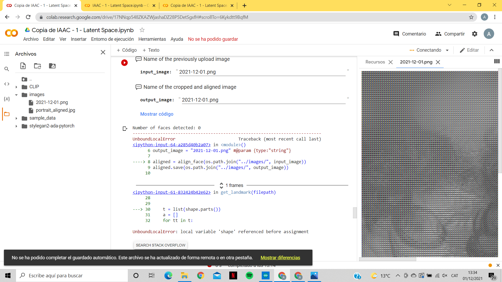
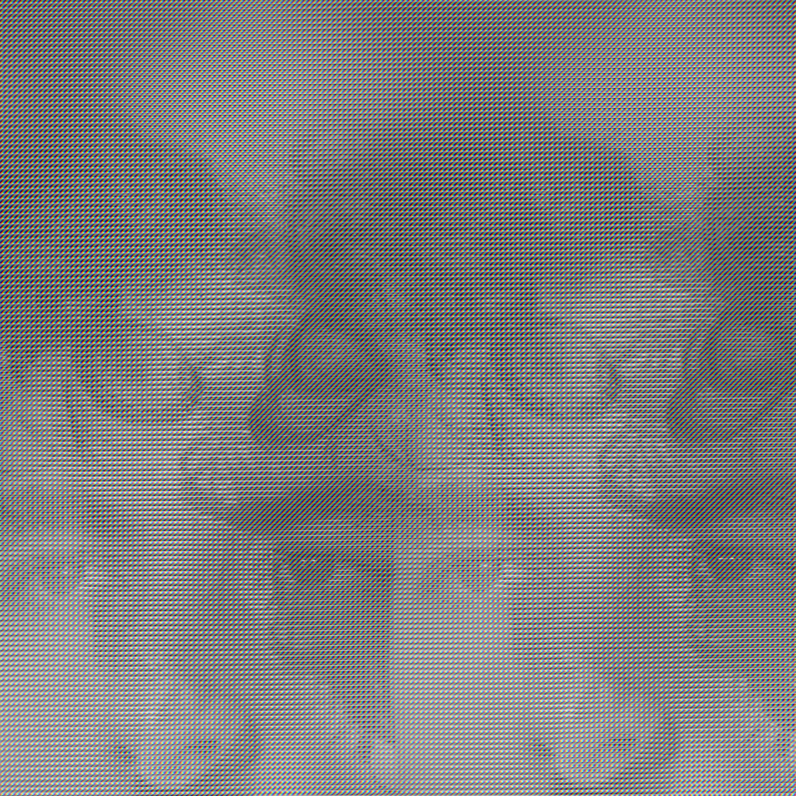

Extended Intelligences
Network Initiation


The evolution of food towards its destruction is used as a metaphor for life itself. As well as human behaviour on nature with the capitalist system, on the overproduction of food and the waste that feeds it. Adding that seasoning as the final function of everything, which is destruction, death.
This explores not only the benefit of the privilege of the human being as a speciesist being, but also the control and power that he aspires to have over nature with the exploration of emotional intelligence.